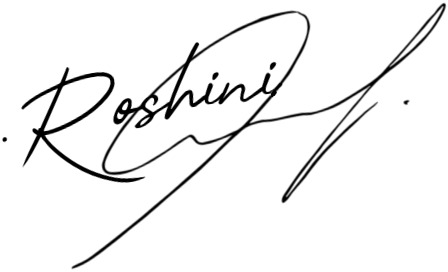

ROSHINI VS
3rd Year
B.E. Computer Science Engineering
Chennai,TamilNadu
Contact:8........4
Email-id:vsros.....@gmail.com
CARRIER OBJECTIVE
I am an Aspiring IT professional , seeking a position in the IT industry. I am skilled in programming,
problem-solving, and creating efficient software solutions. Eager to leverage my technical abilities and
creativity in a dynamic work environment to contribute to innovative projects and drive technological
advancements. Committed to continuous learning and professional growth, with a passion for delivering
high-quality results and enhancing my expertise in the field.
SKILL SET
Technical skill
- C
- Python
- Java
- HTML
- CSS
- Designing (Figma,canva)
Soft skill
- Problem Solving
- Multitasking
- Team collaboration
- Communication
EDUCATION
| S.No |
School/College |
Class/Department |
| 1. |
Zion Matriculation Higher Secondary School,Selaiyur |
12th std |
| 2. |
Rajalakshmi Engineering College,Thandalam |
Computer Science and Engineering |
ACTIVITIES
- Entered into the finals in Women Hackathon which was conducted by Shooting Stars Foundation
- Presented our ideas in many inter-college Events
- Runner up in Poster Presentation
- Also I have done my implant training in Web Development
PROJECTS
- Diabetes Predictor
- A website-based desktop app generates a diabetes prediction PDF report using user medical data, trained models, and includes user parameters, prediction results, lifestyle changes, and technical details like ROC curves and confusion matrices.
- Educational technology solutions for underrepresented groups
- By Creating culturally sensitive educational technology for women addresses their unique challenges, provides skill-building opportunities, fosters supportive environments, and empowers them to bridge the gender gap in education.
- Smart factory and automation
- By Creating a user-friendly B2B e-commerce platform enabling business-supplier communication, competitive bidding, real-time machine insights, data-driven decisions, and a consistent, timely supply of quality raw materials.
SIGNATURE
